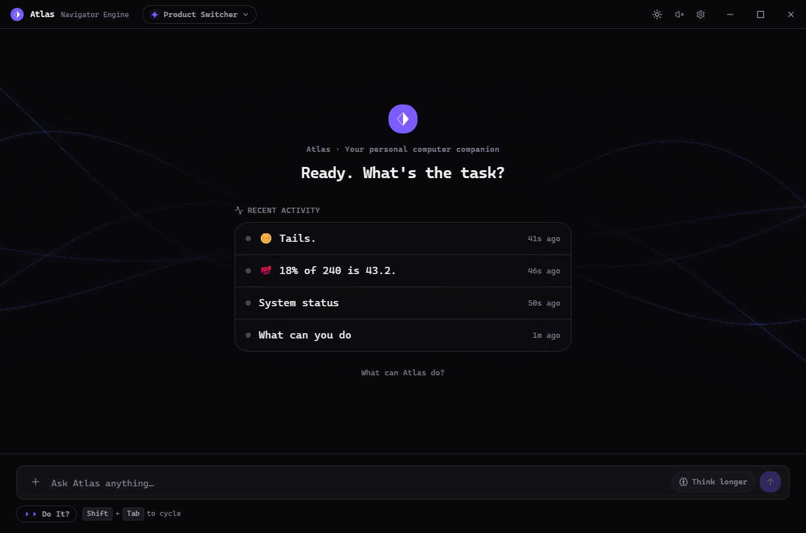
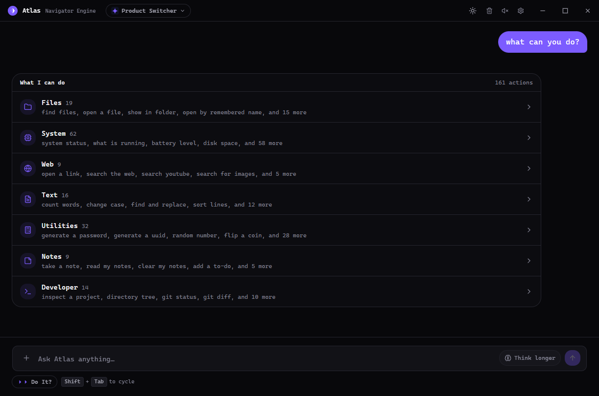
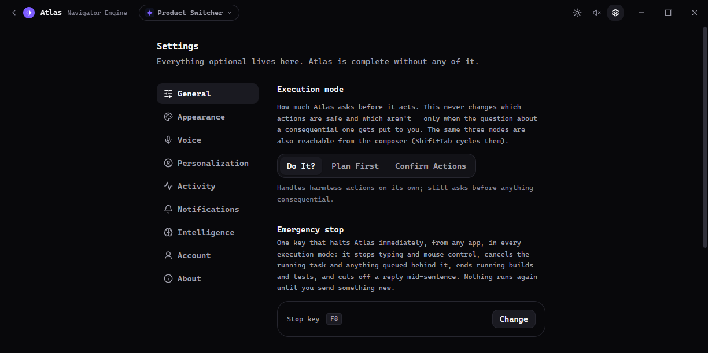
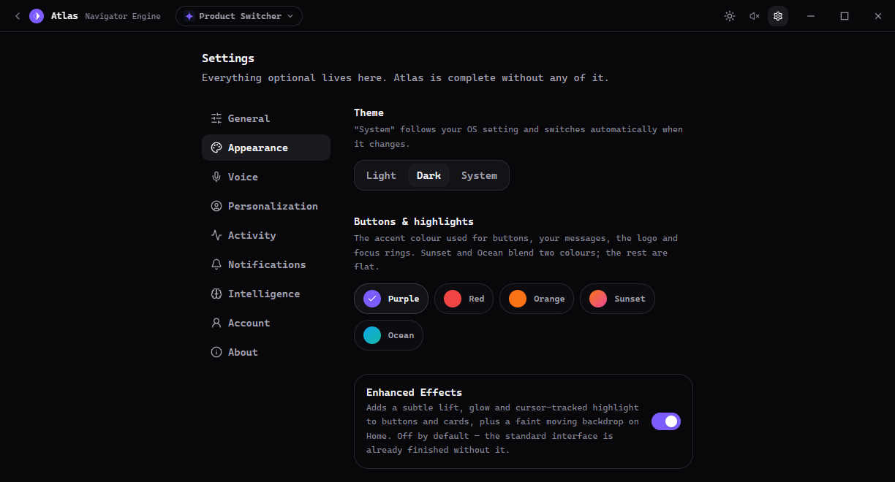

01
Desktop control
Designed to interact with the apps, windows, files, and tools you actually use.
Atlas is a powerful desktop assistant built to understand what you need, interact with your computer, and adapt to the way you work.

CAPABILITIES
Atlas is a real desktop tool: it understands objectives, works with your environment, and can grow new abilities over time.
Designed to interact with the apps, windows, files, and tools you actually use.
Turn a plain-language goal into a sequence of useful actions and repeatable workflows.
Shape the assistant around your name, voice, appearance, behavior, and preferred execution style.
Built around a desktop-first architecture with local capabilities at the center.
Understand what you are trying to accomplish, then choose tools and actions that fit the task.
A capability system built to expand with new skills, integrations, and workflows over time.
CUSTOMIZATION
The assistant should fit your workflow—not the other way around. Explore a few of the controls you can use to make Atlas personal.
INTERFACE
A direct look at the Atlas experience: clear status, direct controls, task context, and recent activity without turning the desktop into a dashboard jungle.



HOW ATLAS WORKS
No giant workflow diagram required. The core loop is intentionally easy to understand.
Describe the outcome in natural language.
→It interprets the request and chooses an appropriate path.
→Tools and desktop actions carry the task forward.
→The activity is visible and the system remains configurable.
PHILOSOPHY
Atlas is a serious desktop assistant—not a thin chat window wrapped around a model.
The goal is a system that becomes more capable without becoming harder to understand. The interface stays calm. The controls stay explicit. The assistant adapts to the person using it.
The desktop application is ready. Download the Windows installer directly from GitHub Releases; Atlas can update itself when new releases are published.
The latest Windows installer is served from GitHub Releases. Atlas can update itself when new releases are published.